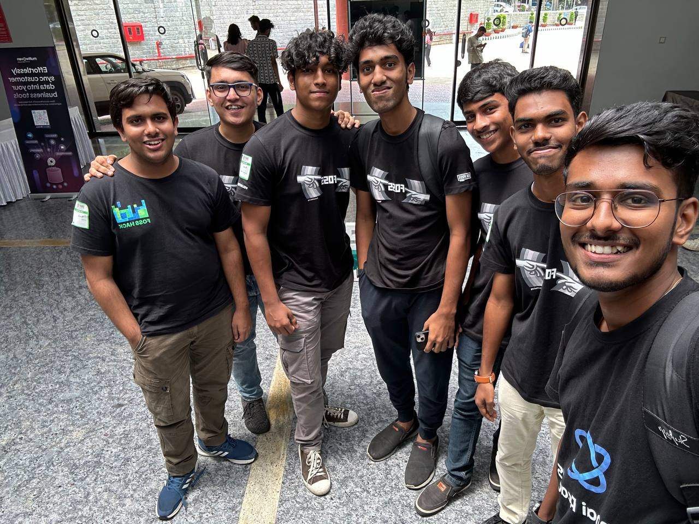
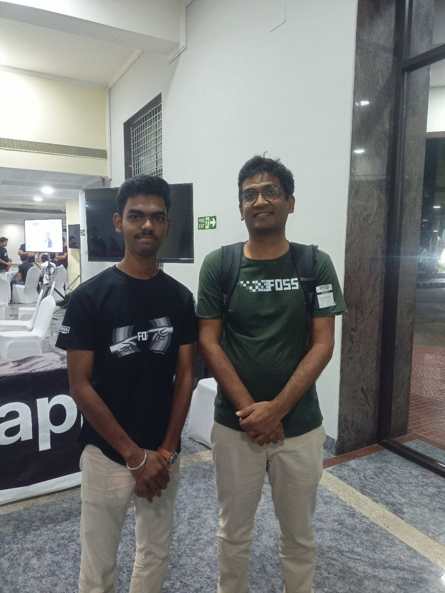
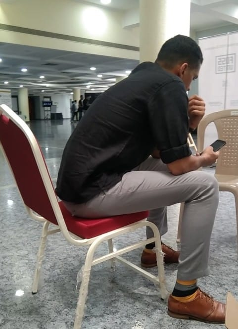

IndiaFOSS 2024
So finally I attended and volunteered at IndiaFOSS conference

Journey
In April 2023, Mangesh, Jacob, and I attended the PuneFOSS conference. Inspired by this event, we decided to organize something similar in Solapur. Our first event took place in August 2023, followed by a meetup in March 2024. During this time, I was also volunteering with FOSS United Bangalore as a video editor, where I created intro promos for the BangaloreFOSS YouTube channel and edited speaker sessions. In Solapur, I was responsible for handling logistics. After completing my diploma, I moved to an engineering college far from my hometown, while Mangesh relocated to Bangalore for his internship.
The Solapur city chapter was always an experiment. We held a meetup with very few participants and organized only one event, which was successful due to the efforts of our team. However, after that, we did not host any further meetups or events. Despite our best efforts to foster interest among local students, it will likely take more time for a city like Solapur to engage with such external events. I continued volunteering with BangaloreFOSS, and during this period, FOSS United announced a call for volunteers for IndiaFOSS 2024. I applied and was interviewed by Ansh, who asked questions like “Why do you want to volunteer?”, “How did you start participating in FOSS events?”, and “What role can you play as a volunteer?”. After the interview, I began volunteering, with my primary role being on-ground assistance.
Conference Day 1
On the first day, my responsibility was to sit at the registration desk and handle participant, speaker, and community partner check-ins. Lunch was served, which was excellent, and we also distributed t-shirts. Participants began arriving early—imagine the conference starting at 9:30 a.m., yet attendees were already at the venue by 6:30 a.m. Many volunteers didn’t have breakfast as everyone was busy with their tasks. We were hungry but happy to see 1,500 participants at the event. The check-in process continued until 4:00 p.m., so our team swapped positions periodically. I wandered around, visiting each booth and interacting with participants. Unfortunately, I didn’t get to attend many talks except for those by Kailash and Magizhan Selvan, as I spent most of my time outside.
During the day, I spoke with Anoop, Rushabh, Kailash, and several others. As a student from a city with limited exposure to “real” knowledge, visiting Bangalore and volunteering at such an event was exciting, especially seeing figures like Rushabh and Kailash for the first time—it felt like meeting celebrities. Toward the end of the first day, Jacob and I finally had the opportunity to speak with Rushabh. We were so nervous that we didn’t even know what to ask. We awkwardly said, “Hi Rushabh, we wanted to talk to you, but we’re not sure what to say.” Rushabh smiled and initiated the conversation, asking about what we do and where we’re from. He gave us valuable advice, saying, “Have you seen Indian Idol? Every contestant sings well, but not everyone becomes the winner. Just like practicing music, you have to practice coding—keep working on it, keep practicing.” After a brief but insightful conversation, Rushabh left the venue.

Conference Day 2
On the second day, Jacob and I arrived at the venue a little late. We resumed the same work from Day 1, managing participant check-ins and distributing t-shirts and mugs. After lunch, I revisited the booths to ensure I hadn’t missed anything and came across Kailash again. Unfortunately, I made the same mistake as the previous day—I had no questions prepared and just said “Hi.” Kailash, being kind, asked where I was from and what I was studying.
Later, I attended a Birds of a Feather (BoF) session moderated by Hari and Advaith. The topic was “FOSS and the Community,” where everyone in the auditorium shared their thoughts on how FOSS communities can be improved. There were discussions about integrating FOSS into schools and colleges to enhance students’ knowledge, and some participants even provided feedback on the conference itself.
After the session, I returned to the registration desk to continue my work. Toward the end of the day, there was an open-mic session where Rahul answered various questions from the audience. Following that, we took a group picture with the participants, speakers, and volunteers in the auditorium. In the evening, all the volunteers and the FOSS United team went out for dinner at a restaurant. I had a wonderful time with all the volunteers. It was a fun and memorable way to wrap up the second day of the conference.
By the way, I took a picture of Kailash while he was preparing for his talk.

Asking for Permission
As an engineering student, you can imagine how even a single day’s leave requires permission from the class in charge and the HOD. I asked for permission to attend the conference, and they agreed on the condition that I submit a certificate of volunteering upon my return. I was aware that FOSS United doesn’t provide certificates, and honestly, I wasn’t volunteering for the certificate—I consider them unnecessary. After returning from the conference, I created a certificate using Canva and submitted it to the department. The HOD was happy, I was happy, and all was well.